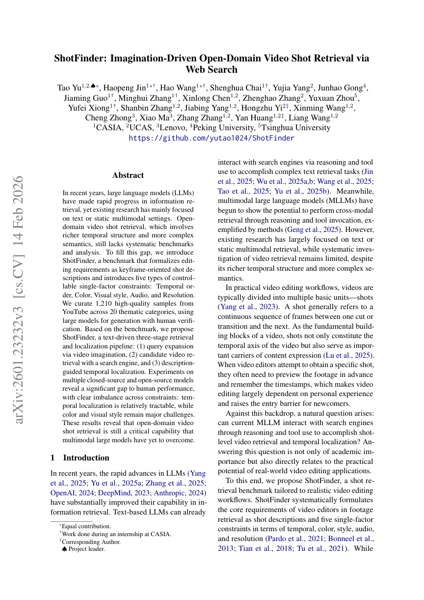
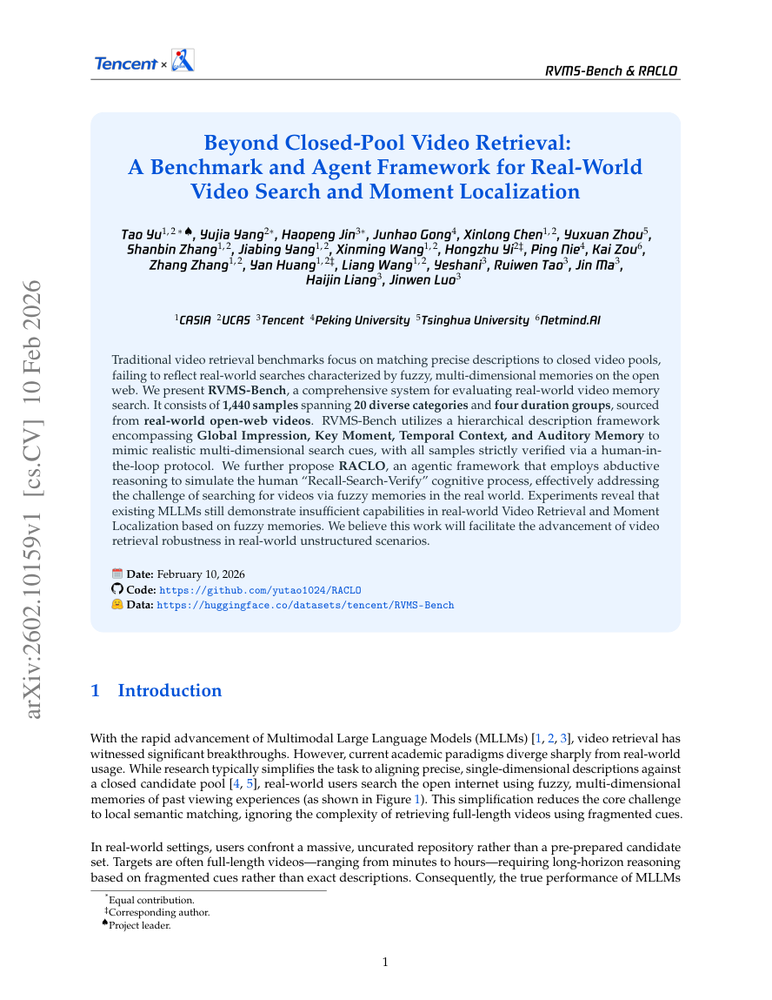

Open-world Video Search · Real-world Memory Retrieval
ShotFinder / RVMS-Bench / RACLO
A research line for retrieving videos from fuzzy, open-world user memories instead of clean closed-pool captions.


Motivation
Most video retrieval benchmarks assume a clean text query and a fixed candidate pool. Real users search from memory: they remember partial scenes, ambiguous actions, rough time, visual style, or a social context. This project reframes retrieval around that mismatch.
Fuzzy Memory Query
First-stage Recall
Multimodal Reranking
Evidence-grounded Result
score(q, v) = sim(E_text(q), E_video(v)) + rerank(q, frames, events)
Combines embedding recall with a stronger reranker over visual and temporal evidence.
Benchmark Design
- Memory-like queries with incomplete visual and temporal information.
- Large candidate pools with distractors that are semantically close.
- Evaluation focused on recall, ranking quality, and robustness to fuzzy language.
Retrieval Pipeline
- Video/text embedding for first-stage recall.
- Reranking with stronger multimodal evidence.
- Reasoning over events, objects, scene transitions, and user-memory clues.